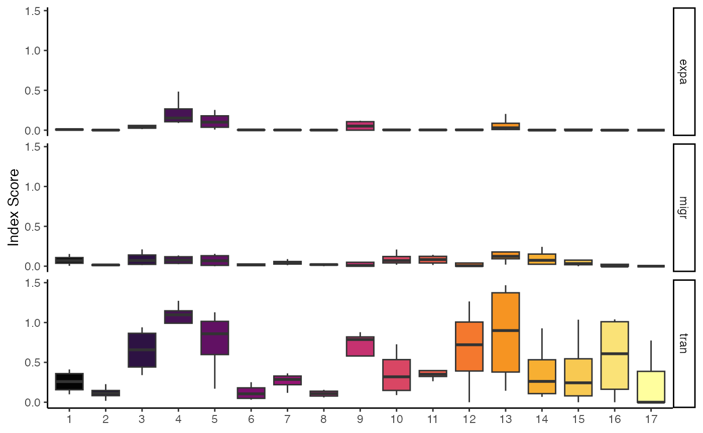
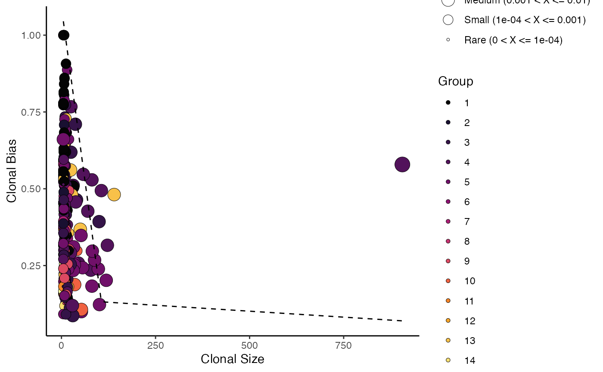
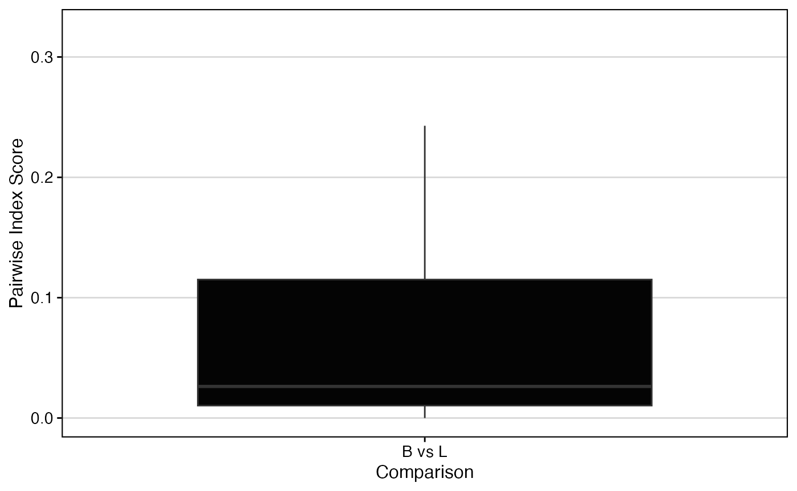
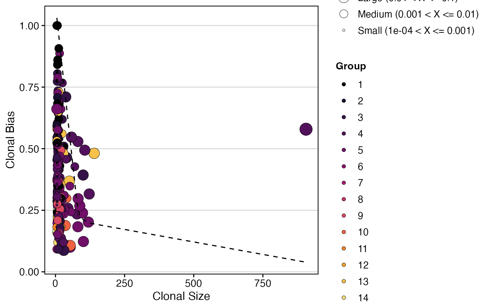

Quantifying Clonal Bias
Compiled: April 03, 2026
Source:vignettes/articles/Clonal_Bias.Rmd
Clonal_Bias.RmdStartracDiversity
From the excellent work by Zhang et al. (2018, Nature), the authors introduced new methods for looking at clones by cellular origins and cluster identification. We strongly recommend you read and cite their publication when using this function.
To use the StartracDiversity() function, you need the
output of the combineExpression() function and a column in
your metadata that specifies the tissue of origin.
Indices Output from StartracDiversity()
-
expa- Clonal Expansion. Measures the degree of clonal proliferation within a given cell cluster. It is calculated as1 - normalized Shannon entropy, where a higher value indicates that a few clones dominate the cluster.
-
migr- Cross-tissue Migration. Quantifies the movement of clonal T cells between different tissues, as defined by thetypeparameter. This index is based on the entropy of a single clonotype’s distribution across the specified tissues.
-
tran- State Transition. Measures the developmental transition of T cell clones between different functional clusters. This index is calculated from the entropy of a single clonotype’s distribution across the cell clusters identified in the data.
Key Parameters for StartracDiversity()
-
type: The variable in the metadata that provides tissue type. -
group.by: A column header in the metadata to group the analysis by (e.g., “sample”, “treatment”).
By default, StartracDiversity() will calculate all three
indices (expa, migr, and tran)
for each cluster and group you define. This provides a comprehensive
overview of the clonal dynamics in your dataset. The output is a
three-paneled plot, with each panel representing one index.
In the example data, type corresponds to the “Type”
column, which includes “P” (peripheral blood) and “L” (lung)
classifiers. The analysis is grouped by the “Patient” column.
# Calculate and plot all three STARTRAC indices
StartracDiversity(scRep_example,
type = "Type",
group.by = "Patient")
Calculating a Single Index
If you’re only interested in one aspect of clonal dynamics, you can
specify it using the index parameter. For example, to only
calculate and plot clonal expansion:
# Calculate and plot only the clonal expansion index
StartracDiversity(scRep_example,
type = "Type",
group.by = "Patient",
index = "expa")
Pairwise Migration Analysis
Another feature of StartracDiversity() is the ability to
perform pairwise comparisons. To specifically quantify the migration
between two tissues (e.g., Lung vs. Periphery), set
index = "migr" and tell the function which column to use
for the comparison with pairwise = "Type".
# # Calculate pairwise migration between tissues
StartracDiversity(scRep_example,
type = "Type",
group.by = "Patient",
index = "migr",
pairwise = "Type")
clonalBias
A new metric proposed by Massimo et al,
clonalBias(), like STARTRAC, is a clonal metric that seeks
to quantify how individual clones are skewed towards a specific cellular
compartment or cluster. A clone bias of 1 indicates that a
clone is composed of cells from a single compartment or cluster, while a
clone bias of 0 matches the background subtype
distribution. Please read and cite the linked manuscript if using
clonalBias()
Key Parameter(s) for clonalBias()
-
group.by: A column header in the metadata that bias will be based on. -
split.by: The variable to use for calculating the baseline frequencies (e.g., “Type” for lung vs peripheral blood comparison) -
n.boots: Number of bootstraps to downsample. -
min.expand: Clone frequency cut-off for the purpose of comparison (default = 10).
Here we calculate and plot clonal bias using aa clone
calls, splitting by “Patient” and grouping by “seurat_clusters”, with a
minimum expansion of 5 and 10 bootstraps:
clonalBias(scRep_example,
cloneCall = "aa",
split.by = "Patient",
group.by = "seurat_clusters",
n.boots = 10,
min.expand =5)
Related Articles
- Visualizations for Single-Cell Objects - Alluvial plots, chord diagrams, and clonal network overlays.
-
Combining Clones and Single-Cell
Objects - Attach clonal data with
combineExpression(). - Comparing Clonal Diversity and Overlap - Diversity metrics and repertoire overlap.